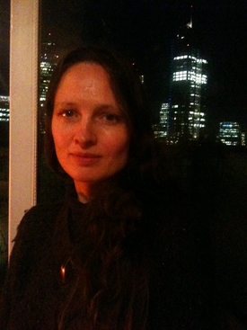

About Jane
Jane Bennett is a Registered Craniolsacral Therapist and has been practising since 2006. She trained at the London College of Craniolsacral Therapy which furthered her knowledge and experience of inner body listening.
Previously Jane studied Yoga and Complementary Therapies at the Yoga Bio-Medical Trust learning body work techniques designed to assist people with both physical and mental illnesses. Following this training Jane was based at Headways Spinal and Brain Injury Hospital in East London for 2 years.
Coming from a dance background Jane has worked with many mind body centring disciplines including Feldenkrais and Klein Efficiency of Movement System Techniques.